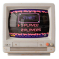
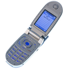
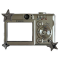

<div id="projectsModal" class="fixed inset-0 flex items-center md:items-start justify-center z-50 pt-0 md:pt-16"
  onclick="handleBackgroundClick(event, 'projectsModal', 'projectsModalContent')">
  <div id="projectsModalContent"
    class="transform transition-all duration-300 scale-95 opacity-0 bg-white rounded-2xl shadow-2xl w-[90%] sm:w-[80%] md:w-[70%] max-h-[90vh] aspect-[3/5] md:aspect-[16/9] overflow-hidden relative flex flex-col">

    <!-- Microsoft Edge-like top bar -->
    <div class="flex items-center justify-between px-4 py-2 bg-gray-100 border-b border-gray-300 shrink-0">
      <div class="flex gap-2">
        <span onclick="closeProjectsModal()" class="w-3 h-3 rounded-full cursor-pointer bg-red-500"></span>
        <span onclick="closeProjectsModal()" class="w-3 h-3 rounded-full cursor-pointer bg-yellow-500"></span>
        <span onclick="closeProjectsModal()" class="w-3 h-3 rounded-full cursor-pointer bg-green-500"></span>
      </div>
      <span class="text-xs text-gray-500 font-bold">WORKS/PROJECTS</span>
      <div class="w-12"></div>
    </div>

    <!-- Tab Bar -->
    <div class="flex bg-gray-200 border-b border-gray-300 text-sm font-semibold text-gray-700">
      <button class="tab-btn w-1/3 pl-6 py-2 flex items-center gap-2 justify-start border-r border-gray-300 bg-white"
        onclick="switchTab('web')">
        
        <span>Web</span>
      </button>

      <button class="tab-btn w-1/3 pl-6 py-2 flex items-center gap-2 justify-start border-r border-gray-300"
        onclick="switchTab('mobile')">
        
        <span>Mobile</span>
      </button>

      <button class="tab-btn w-1/3 pl-6 py-2 flex items-center gap-2 justify-start" onclick="switchTab('uiux')">
        
        <span>UI/UX</span>
      </button>
    </div>


    <!-- Content Area -->
    <div class="flex-1 overflow-y-auto relative bg-[url('assets/images/bg-projects.png')] bg-cover bg-center">
      <!-- Tab content containers -->
      <div id="tab-web" class="tab-content relative p-6 text-white block">
        <!-- Tab-specific overlay -->
        <div class="relative z-10">
          <h2 class="serif text-center text-4xl font-bold mb-4">Web Projects</h2>
          <!-- Your Web content here -->
        </div>
      </div>

      <div id="tab-mobile" class="tab-content relative p-6 text-white hidden">
        <div class="relative z-10">
          <h2 class="serif text-center text-4xl font-bold mb-4">Mobile Projects</h2>
          <!-- Your Mobile content here -->
        </div>
      </div>

      <div id="tab-uiux" class="tab-content relative p-6 text-white hidden">
        <div class="relative z-10">
          <h2 class="serif text-center text-4xl font-bold mb-4">UI/UX Projects</h2>
          <!-- Your UI/UX content here -->
        </div>
      </div>

    </div>

  </div>
</div>